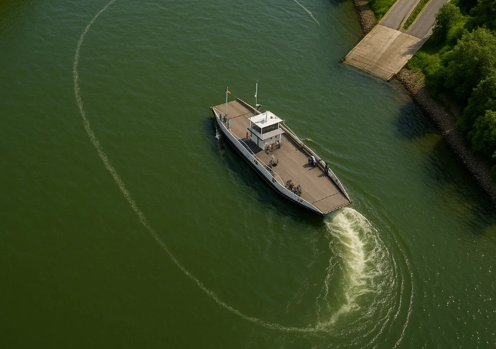

Vor kurzem habe ich einen Fluss mit einer Fähre überquert und konnte beobachten, dass die Fähre mehr oder weniger eine gerade Linie über den Fluss nahm. Ich hatte das Gefühl, dass das nicht der optimale Pfad war und beschloss etwas genauer über die Sache nachzudenken.

Wenn ich einen Autopiloten für eine Flussfähre entwerfen würde, wie würde dieser die Fähre bewegen? Ich denke optimal wäre es, wenn die Fähre möglichst wenig Energie verbraucht, schnell ankommt und keine anderen Wasserfahrzeuge gefährdet. Den letzten Punkt würde ich ausklammern weil eine Fähre nach den Regeln der Binnenschifffahrtsstraßenordnung so gut wie immer Vorfahrt hat. Außerdem gehe ich davon aus, dass immer noch ein Kapitän an Bord ist, der im Notfall meinen Autopiloten deaktivieren und ein Ausweichmanöver starten könnte. Bleibt noch die Energieminimierung sowie eine erträgliche Fahrzeit. Wobei diese beiden Ziele natürlich gegensätzlich sind.
Bei einem Fluss ohne Strömung ist die Sache recht einfach. Die Fähre würde auf gerader Strecke von Anlegestelle zu Anlegestelle fahren. Ohne Zeitlimit würde sie unendlich lange dafür brauchen und mit Zeitlimit genau so lange, wie das Zeitlimit eben vorgibt. Würde sie schneller fahren und das Zeitlimit unterbieten wäre es schließlich nicht mehr energieoptimal. Beliebig schnell kann sie natürlich auch nicht fahren, wodurch das Zeitlimit nicht beliebig klein sein kann.
Interessant wird es erst wenn der Fluss eine Strömung aufweist. Nun braucht es kein Zeitlimit mehr um eine energieoptimale Lösung mit endlicher Fahrzeit berechnen zu können. Der Grund dafür ist, dass auf der Stelle stehen jetzt Energie kostet, da gegen die Strömung angehalten werden muss. Es ist also relativ intuitiv dass wir einen energieoptimalen Pfad berechnen können ohne eine feste Fahrzeit vorgeben zu müssen.
Um den Fall mit Strömung genauer untersuchen zu können brauchen wir ein Modell. Ich schlagen folgendes vor:
to be documented